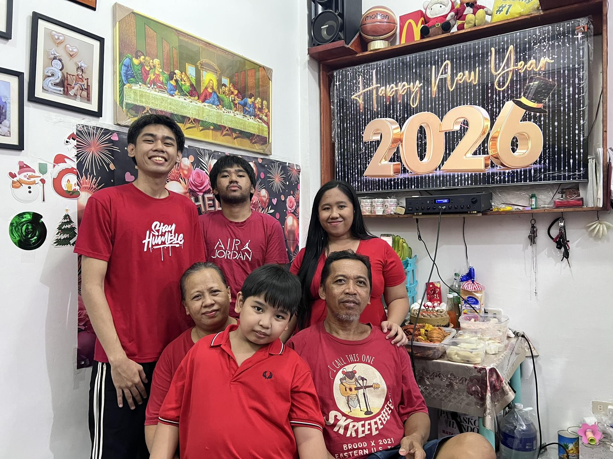

This photo is very special to me because it reminds me of the love, support, and strength that my family gives me every day. I love them so much.
No matter what challenges I face, I know I always have them beside me. They are my inspiration, my motivation, and my safe place.
I love this photo because it captures not just a moment, but the bond that means everything to me. I love you so much, family!